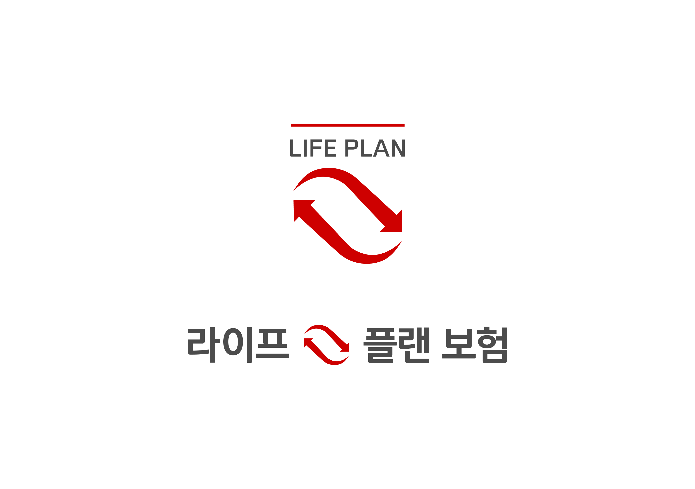
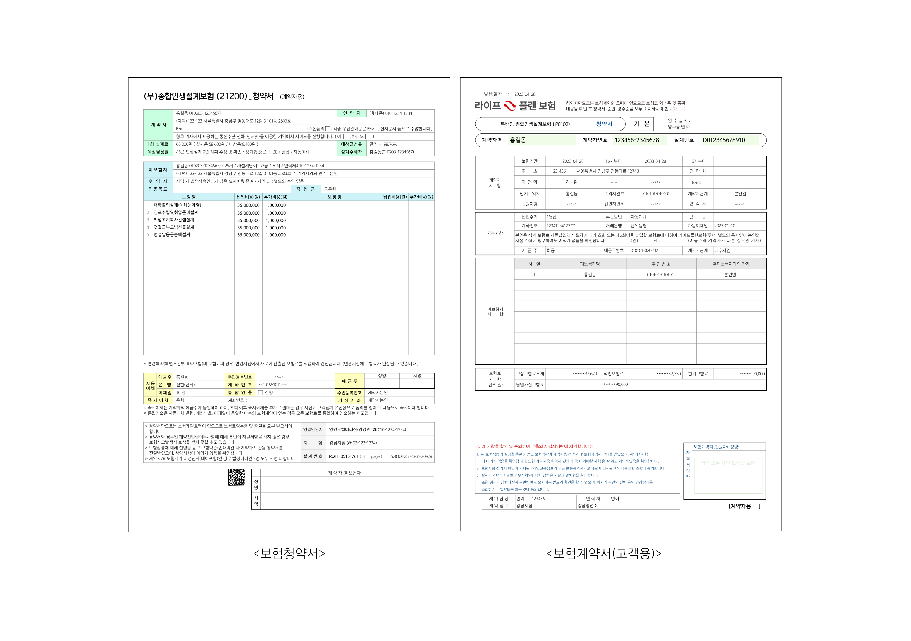
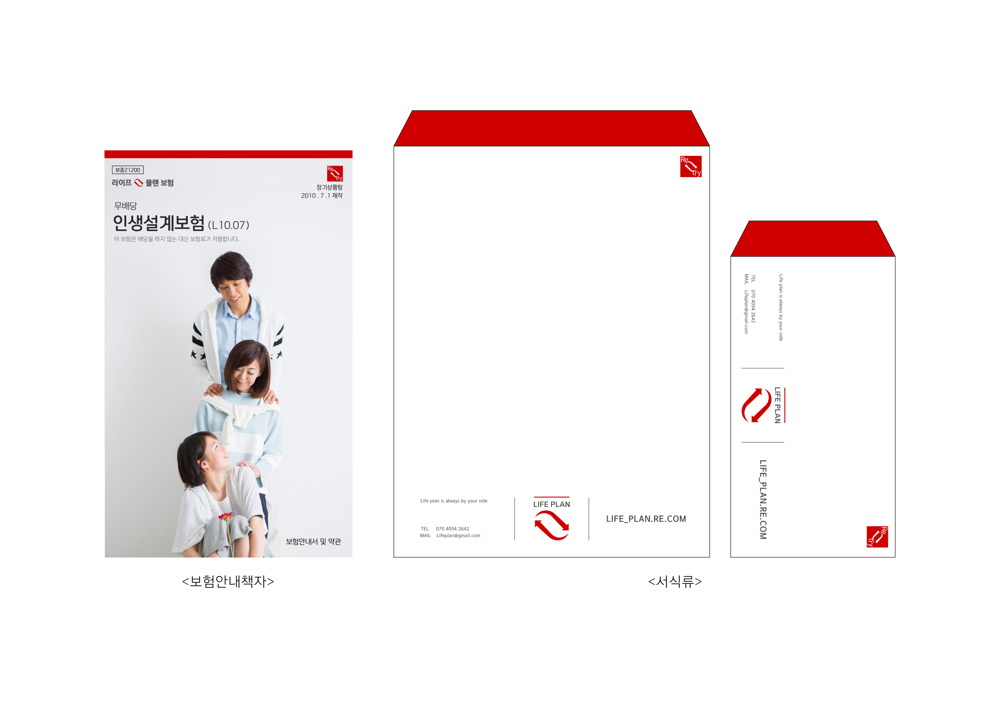
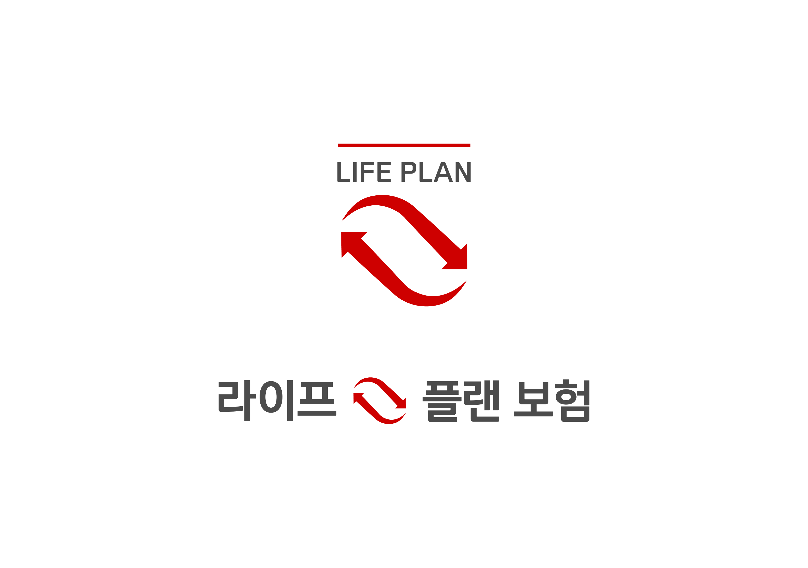
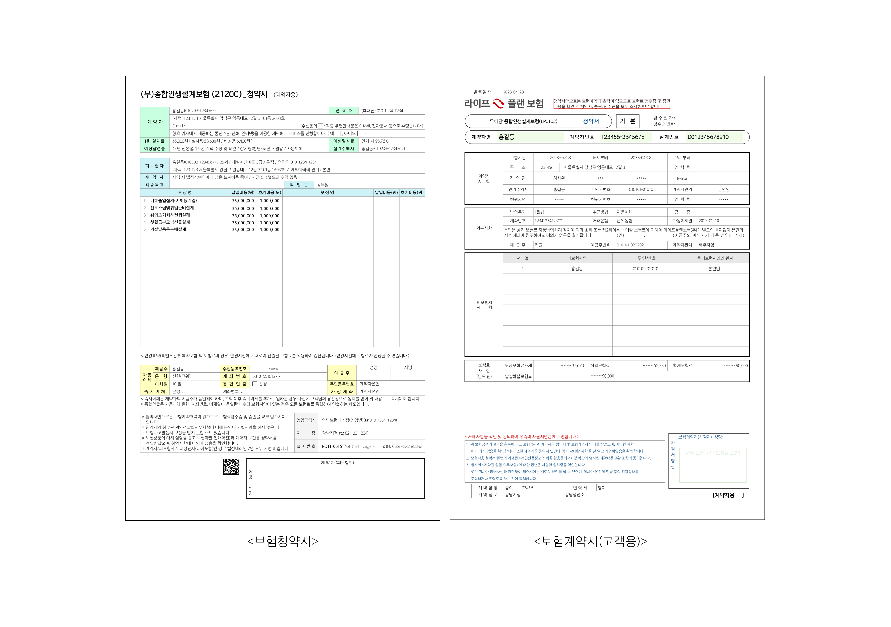
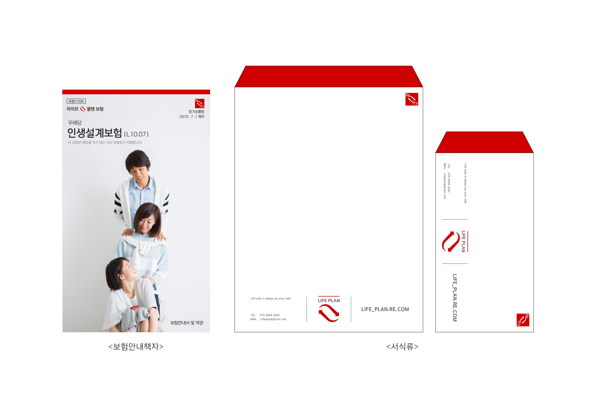

라이프 플랜 보험(Life plan insurance)
Graphic
Motion
Editorial
2023 | 개인 작업
이 프로젝트는 간혹 나의 삶을 남에게 맡겨버리고 싶다는 생각에서
시작했습니다. 그러나 나의 삶을 남에게 맡기기만 한다면 내가
주체적으로 사는 능력을 상실한다는 것과 좌절해도 다시 일어설 수
있는 힘을 스스로 기르지 못하게 됩니다. 당장은 괜찮을 수 있겠지만
아마 계속해서 불어오는 풍파를 스스로 대응할 수 없을 것 입니다.
삶은 어떻게 보면 너무 길다고 생각할 수 있을지도 모릅니다. 주변에 기댈 수 있는 사람들이 점점 줄어든다고 하더라도 스스로 이겨내고 앞으로 나아려 애쓰는 현대인들에게 위로와 응원의 메세지를 보내고자 프로젝트를 기획하게 되었습니다.
삶은 어떻게 보면 너무 길다고 생각할 수 있을지도 모릅니다. 주변에 기댈 수 있는 사람들이 점점 줄어든다고 하더라도 스스로 이겨내고 앞으로 나아려 애쓰는 현대인들에게 위로와 응원의 메세지를 보내고자 프로젝트를 기획하게 되었습니다.
This project was born out of the realization that sometimes it's
tempting to leave your life in the hands of someone else, but
when you leave your life in the hands of someone else, you lose
the ability to be in control, and you don't develop the strength
to get back up when you fall down. to bounce back from setbacks.
I might be fine for a while. but I won't be able to handle the
winds that keep blowing. Life is may seem too long in some ways.
Lean on others people to lean on, even if there are fewer and
fewer of them. to send a message of comfort and support to
modern people who are trying to overcome and move forward to
send a message of comfort and support to modern people who are
trying to overcome and move forward.
 




